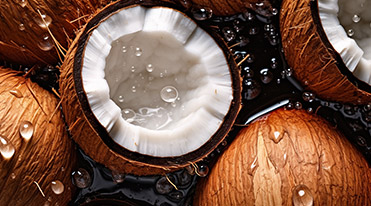
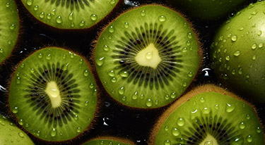
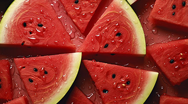
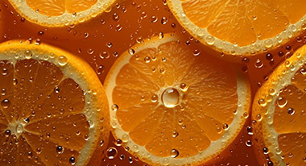

该栏目收录了部份中山大学化学学院2021级本科生的实验报告结果 🎉感谢这些同学对本站的数据贡献！
数据贡献者：安政（21306091）仪分实验组号：乙1
数据贡献者：杨康祺（20318093）仪分实验组号：甲4

数据贡献者：刘景松（21306078）仪分实验组号：甲4

数据贡献者：莫凯（21306274）仪分实验组号：乙7

数据贡献者：商雅欣（21306514）仪分实验组号：甲8

数据贡献者：张绮绮（21306742）仪分实验组号：甲8